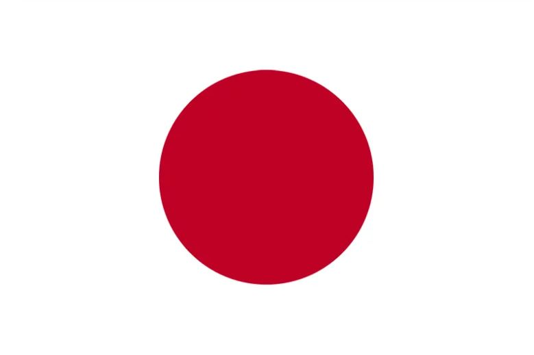
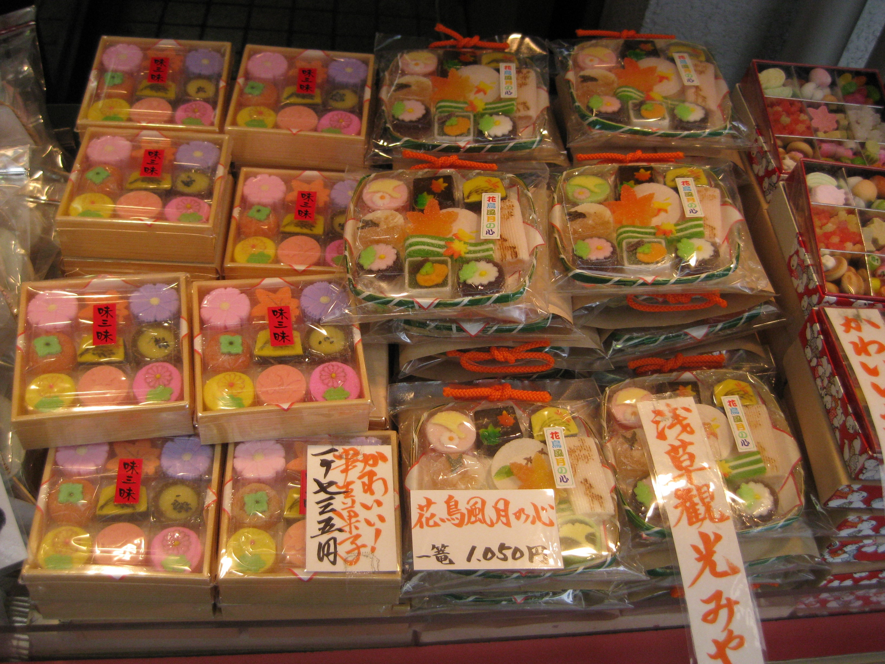

Japan
 Ohayo gozaimasu! I went to Japan in 2009 with a small group of friends. We stayed in Tokyo and were able to go to the country to visit my friend's relatives. What an interesting experience--being in Japan feels like you are on another planet. Everything down to the smallest detail is considered in design!



Top Things at which to Marvel
| Don't Miss: | Why? |
|---|---|
| Shrines | Shrines everywhere! In the middle of the city you are passing a metro station, then the convenience store, then....a shrine? That would neeeeeever happen in LA. |
| Novelty Shops | Pink knit gloves with big white bows and pompoms? A real-life Pokemon Center?! Try your best not to go bankrupt! |
| Food & Treats | Try not to get fat! One can purchase the cutest food gifts to take home to friends and family. |
| Architecture | Stunning attention to detail and unique from occidental style. |
| Convenience stores | Don't miss the Konbini! What?! You can actually eat food from a convenience store?!?! |